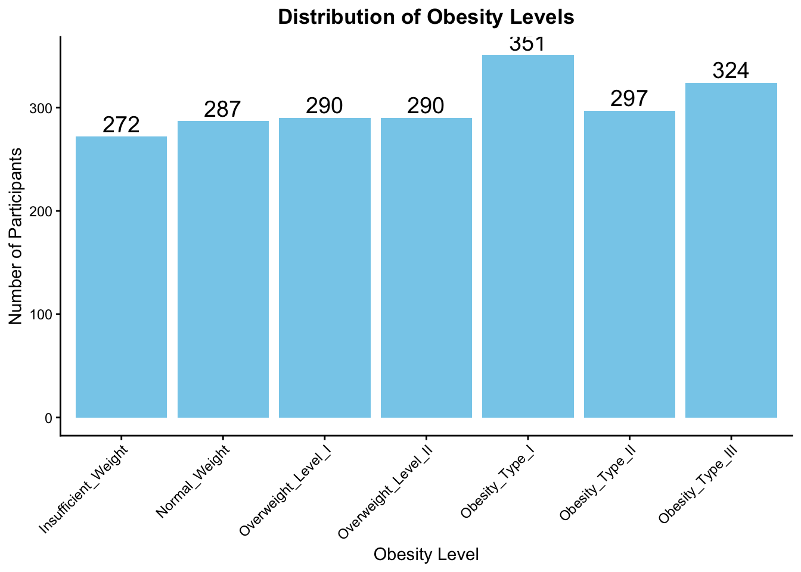
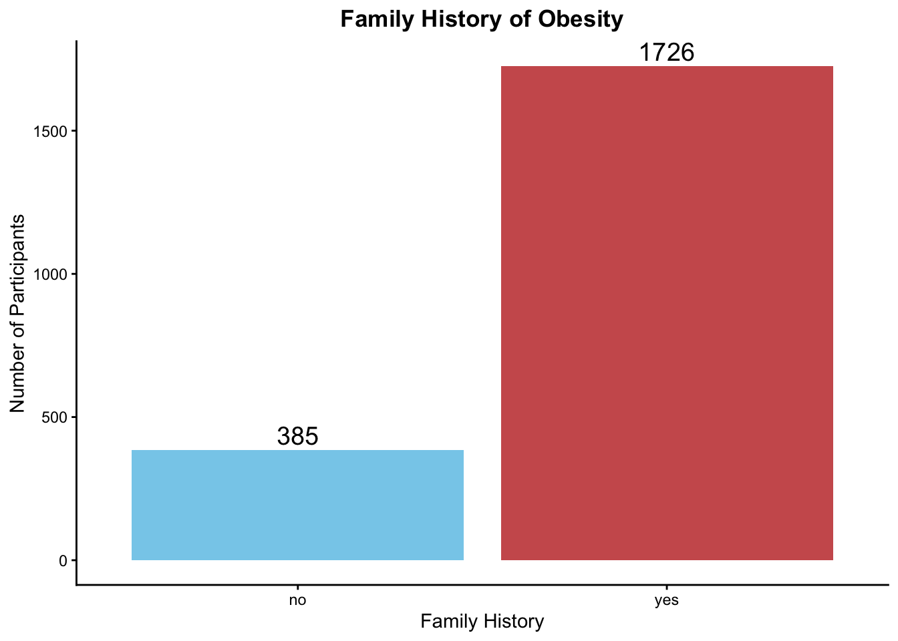
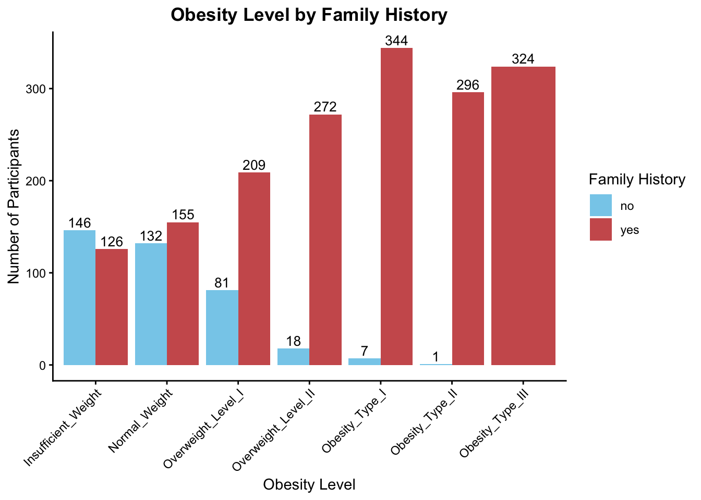
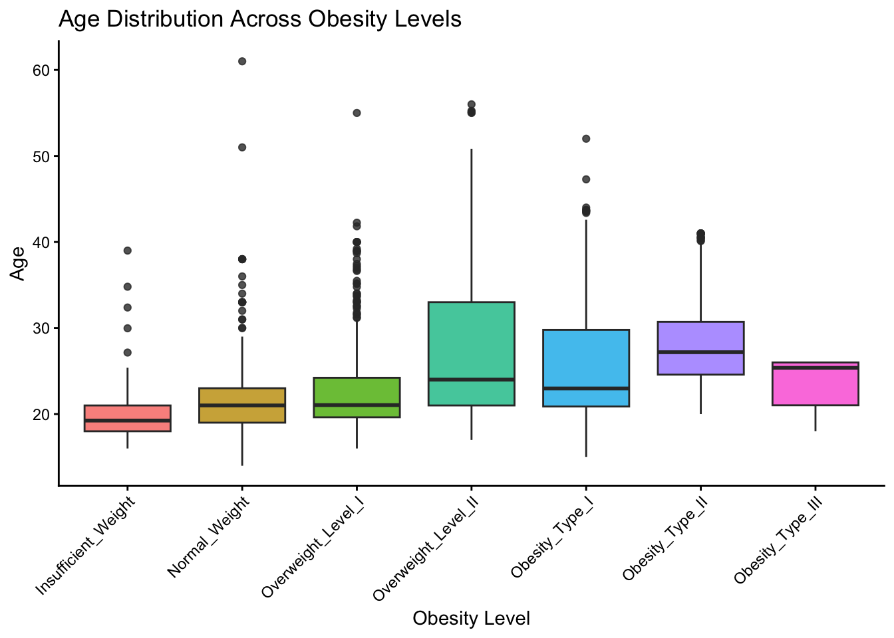
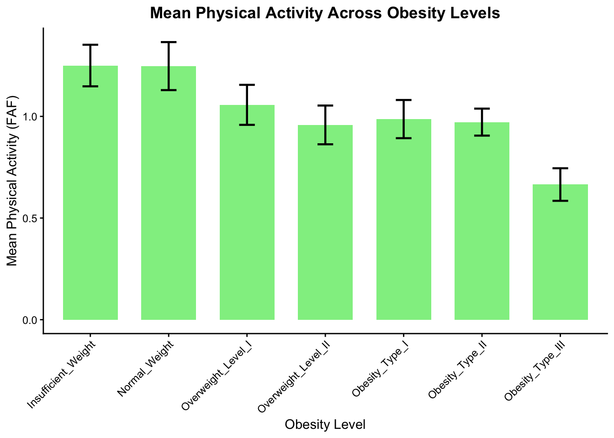
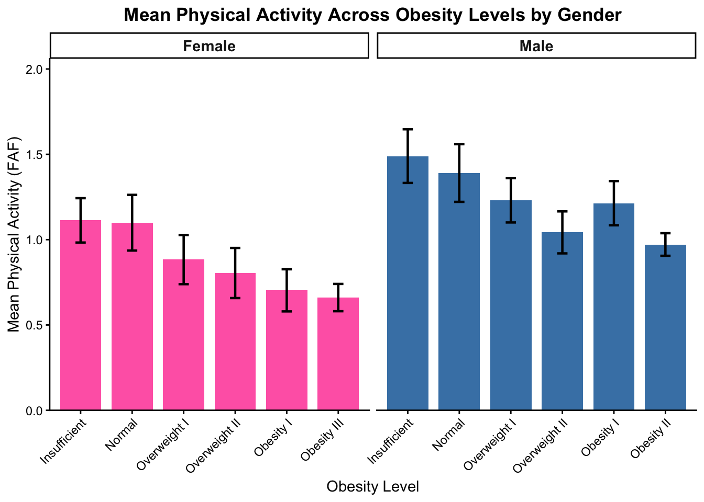
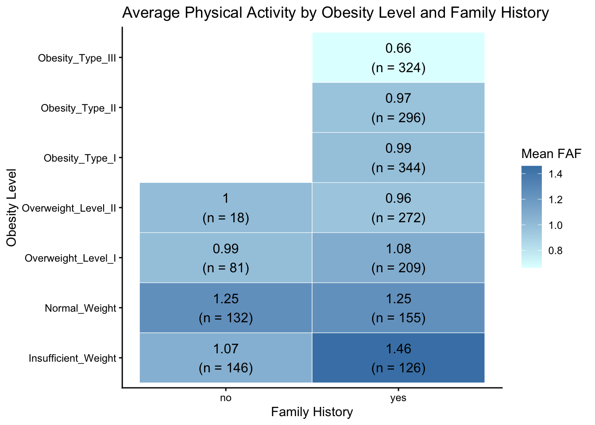
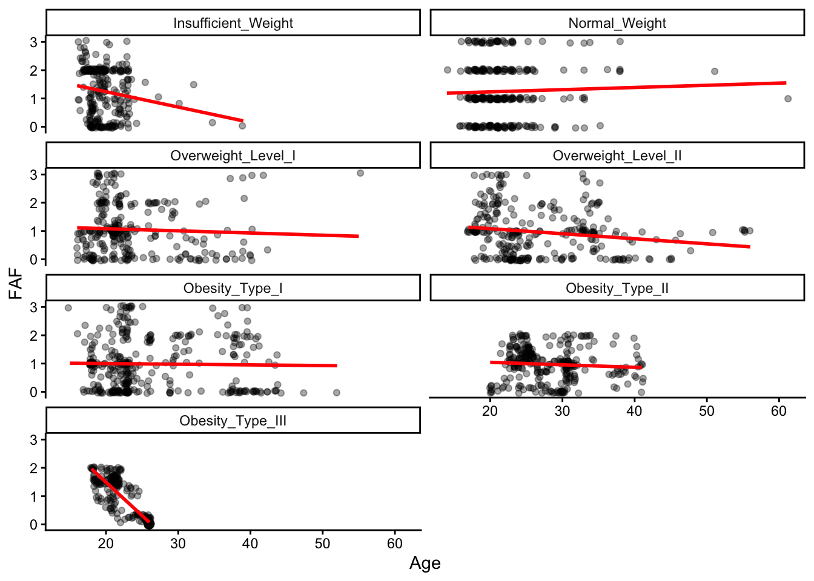
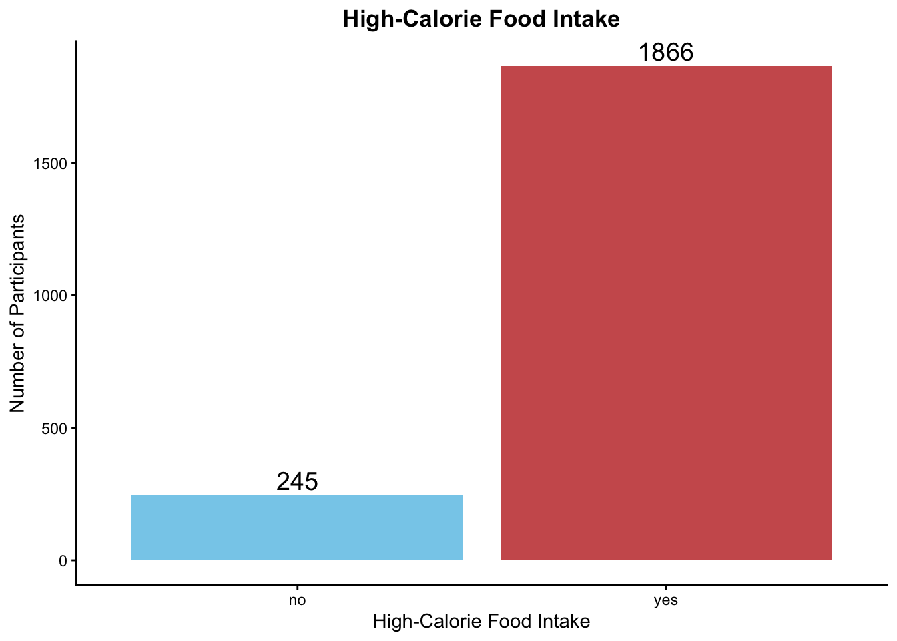
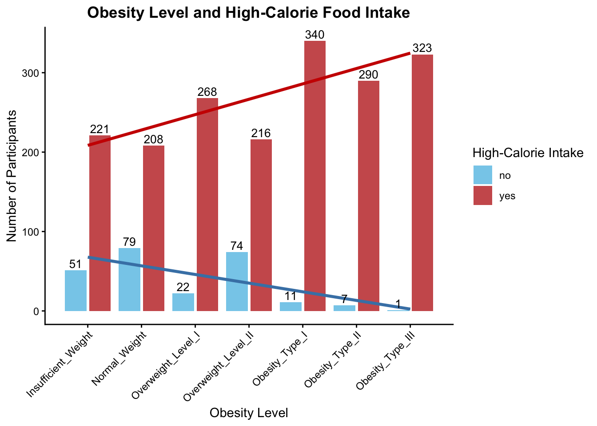

# Library
library(ggplot2)
library(tidyverse)── Attaching core tidyverse packages ──────────────────────── tidyverse 2.0.0 ──
✔ dplyr 1.2.1 ✔ readr 2.2.0
✔ forcats 1.0.1 ✔ stringr 1.6.0
✔ lubridate 1.9.5 ✔ tibble 3.3.1
✔ purrr 1.2.2 ✔ tidyr 1.3.2
── Conflicts ────────────────────────────────────────── tidyverse_conflicts() ──
✖ dplyr::filter() masks stats::filter()
✖ dplyr::lag() masks stats::lag()
ℹ Use the conflicted package (<http://conflicted.r-lib.org/>) to force all conflicts to become errorslibrary(corrplot)corrplot 0.95 loadedlibrary(GGally)
library(car)Loading required package: carData
Attaching package: 'car'
The following object is masked from 'package:dplyr':
recode
The following object is masked from 'package:purrr':
somelibrary(rstatix)Warning: package 'rstatix' was built under R version 4.6.1
Attaching package: 'rstatix'
The following object is masked from 'package:stats':
filter# Structure of the dataset, summary statistics, missing values, and the distribution of obesity levels.
getwd()[1] "/Users/kulkins/Desktop/R_s/AnnaUsoltseva.github.io/projects"setwd("/Users/kulkins/Desktop/R_s/AnnaUsoltseva.github.io/projects")
list.files()[1] "final-report.qmd" "final-report.rmarkdown" "Obesity prediction.csv"Obesity <- read.csv("Obesity prediction.csv")
glimpse(Obesity)Rows: 2,111
Columns: 17
$ Gender <chr> "Female", "Female", "Male", "Male", "Male", "Male", "Fe…
$ Age <dbl> 21, 21, 23, 27, 22, 29, 23, 22, 24, 22, 26, 21, 22, 41,…
$ Height <dbl> 1.62, 1.52, 1.80, 1.80, 1.78, 1.62, 1.50, 1.64, 1.78, 1…
$ Weight <dbl> 64.0, 56.0, 77.0, 87.0, 89.8, 53.0, 55.0, 53.0, 64.0, 6…
$ family_history <chr> "yes", "yes", "yes", "no", "no", "no", "yes", "no", "ye…
$ FAVC <chr> "no", "no", "no", "no", "no", "yes", "yes", "no", "yes"…
$ FCVC <dbl> 2, 3, 2, 3, 2, 2, 3, 2, 3, 2, 3, 2, 3, 2, 3, 3, 2, 2, 3…
$ NCP <dbl> 3, 3, 3, 3, 1, 3, 3, 3, 3, 3, 3, 3, 3, 3, 1, 3, 1, 1, 4…
$ CAEC <chr> "Sometimes", "Sometimes", "Sometimes", "Sometimes", "So…
$ SMOKE <chr> "no", "yes", "no", "no", "no", "no", "no", "no", "no", …
$ CH2O <dbl> 2, 3, 2, 2, 2, 2, 2, 2, 2, 2, 3, 2, 3, 2, 1, 2, 1, 2, 1…
$ SCC <chr> "no", "yes", "no", "no", "no", "no", "no", "no", "no", …
$ FAF <dbl> 0, 3, 2, 2, 0, 0, 1, 3, 1, 1, 2, 2, 2, 2, 1, 2, 1, 0, 0…
$ TUE <dbl> 1, 0, 1, 0, 0, 0, 0, 0, 1, 1, 2, 1, 0, 1, 1, 1, 0, 0, 0…
$ CALC <chr> "no", "Sometimes", "Frequently", "Frequently", "Sometim…
$ MTRANS <chr> "Public_Transportation", "Public_Transportation", "Publ…
$ Obesity <chr> "Normal_Weight", "Normal_Weight", "Normal_Weight", "Ove…names(Obesity) [1] "Gender" "Age" "Height" "Weight"
[5] "family_history" "FAVC" "FCVC" "NCP"
[9] "CAEC" "SMOKE" "CH2O" "SCC"
[13] "FAF" "TUE" "CALC" "MTRANS"
[17] "Obesity" summary(Obesity) Gender Age Height Weight
Length :2111 Min. :14.00 Min. :1.450 Min. : 39.00
N.unique : 2 1st Qu.:19.95 1st Qu.:1.630 1st Qu.: 65.47
N.blank : 0 Median :22.78 Median :1.700 Median : 83.00
Min.nchar: 4 Mean :24.31 Mean :1.702 Mean : 86.59
Max.nchar: 6 3rd Qu.:26.00 3rd Qu.:1.768 3rd Qu.:107.43
Max. :61.00 Max. :1.980 Max. :173.00
family_history FAVC FCVC NCP
Length :2111 Length :2111 Min. :1.000 Min. :1.000
N.unique : 2 N.unique : 2 1st Qu.:2.000 1st Qu.:2.659
N.blank : 0 N.blank : 0 Median :2.386 Median :3.000
Min.nchar: 2 Min.nchar: 2 Mean :2.419 Mean :2.686
Max.nchar: 3 Max.nchar: 3 3rd Qu.:3.000 3rd Qu.:3.000
Max. :3.000 Max. :4.000
CAEC SMOKE CH2O SCC
Length :2111 Length :2111 Min. :1.000 Length :2111
N.unique : 4 N.unique : 2 1st Qu.:1.585 N.unique : 2
N.blank : 0 N.blank : 0 Median :2.000 N.blank : 0
Min.nchar: 2 Min.nchar: 2 Mean :2.008 Min.nchar: 2
Max.nchar: 10 Max.nchar: 3 3rd Qu.:2.477 Max.nchar: 3
Max. :3.000
FAF TUE CALC MTRANS
Min. :0.0000 Min. :0.0000 Length :2111 Length :2111
1st Qu.:0.1245 1st Qu.:0.0000 N.unique : 4 N.unique : 5
Median :1.0000 Median :0.6253 N.blank : 0 N.blank : 0
Mean :1.0103 Mean :0.6579 Min.nchar: 2 Min.nchar: 4
3rd Qu.:1.6667 3rd Qu.:1.0000 Max.nchar: 10 Max.nchar: 21
Max. :3.0000 Max. :2.0000
Obesity
Length :2111
N.unique : 7
N.blank : 0
Min.nchar: 13
Max.nchar: 19
colSums(is.na(Obesity)) Gender Age Height Weight family_history
0 0 0 0 0
FAVC FCVC NCP CAEC SMOKE
0 0 0 0 0
CH2O SCC FAF TUE CALC
0 0 0 0 0
MTRANS Obesity
0 0 table(Obesity$Obesity)
Insufficient_Weight Normal_Weight Obesity_Type_I Obesity_Type_II
272 287 351 297
Obesity_Type_III Overweight_Level_I Overweight_Level_II
324 290 290 # The obesity levels were originally ordered alphabetically, so they were reordered into the ordinal sequence
Obesity$Obesity <- factor(
Obesity$Obesity,
levels = c(
"Insufficient_Weight",
"Normal_Weight",
"Overweight_Level_I",
"Overweight_Level_II",
"Obesity_Type_I",
"Obesity_Type_II",
"Obesity_Type_III"))
levels(Obesity$Obesity)[1] "Insufficient_Weight" "Normal_Weight" "Overweight_Level_I"
[4] "Overweight_Level_II" "Obesity_Type_I" "Obesity_Type_II"
[7] "Obesity_Type_III" table(Obesity$Obesity)
Insufficient_Weight Normal_Weight Overweight_Level_I Overweight_Level_II
272 287 290 290
Obesity_Type_I Obesity_Type_II Obesity_Type_III
351 297 324 # Visualization. How many human subjects was in each group?
ggplot(Obesity, aes(x = Obesity)) +
geom_bar(fill = "skyblue") +
geom_text(stat = "count",
aes(label = after_stat(count)),
vjust = -0.3,
size = 5) +
labs(title = "Distribution of Obesity Levels",
x = "Obesity Level",
y = "Number of Participants") +
theme_classic() +
theme(plot.title = element_text(hjust = 0.5, face = "bold"),
axis.text.x = element_text(angle = 45, hjust = 1))
# FAMILY HISTORY.
table(Obesity$family_history)
no yes
385 1726 summary(Obesity$family_history) Length N.unique N.blank Min.nchar Max.nchar
2111 2 0 2 3 table_history <- table(Obesity$family_history, Obesity$Obesity)
table_history
Insufficient_Weight Normal_Weight Overweight_Level_I Overweight_Level_II
no 146 132 81 18
yes 126 155 209 272
Obesity_Type_I Obesity_Type_II Obesity_Type_III
no 7 1 0
yes 344 296 324# Was there an association between obesity level and family history of obesity?
chisq.test(table_history)
Pearson's Chi-squared test
data: table_history
X-squared = 621.98, df = 6, p-value < 2.2e-16ggplot(Obesity, aes(x = family_history, fill = family_history)) +
geom_bar() +
scale_fill_manual(values = c("no" = "skyblue",
"yes" = "indianred")) +
geom_text(stat = "count",
aes(label = after_stat(count)),
vjust = -0.3,
color = "black",
size = 5) +
labs(title = "Family History of Obesity",
x = "Family History",
y = "Number of Participants") +
theme_classic() +
theme(legend.position = "none",
plot.title = element_text(hjust = 0.5, face = "bold"))
# How did family history of obesity vary across the different obesity levels?
ggplot(Obesity, aes(x = Obesity, fill = family_history)) +
geom_bar(position = "dodge") +
geom_text(stat = "count",
aes(label = after_stat(count)),
position = position_dodge(width = 0.9),
vjust = -0.3,
size = 3.5) +
scale_fill_manual(values = c(
"no" = "skyblue",
"yes" = "indianred")) +
labs(title = "Obesity Level by Family History",
x = "Obesity Level",
y = "Number of Participants",
fill = "Family History") +
theme_classic() +
theme(plot.title = element_text(hjust = 0.5, face = "bold"),
axis.text.x = element_text(angle = 45, hjust = 1))
#PHYSICAL ACTIVITY
summary(Obesity$FAF) Min. 1st Qu. Median Mean 3rd Qu. Max.
0.0000 0.1245 1.0000 1.0103 1.6667 3.0000 # Was the physical activity data normally distributed?
hist(Obesity$FAF,
breaks = 10,
col = "skyblue",
border = "black",
main = "Histogram of Physical Activity (FAF)",
xlab = "Physical Activity (FAF)")
ggplot(Obesity, aes(sample = FAF)) +
stat_qq() +
stat_qq_line(color = "red", linewidth = 1) +
labs(
title = "Q-Q Plot of Physical Activity (FAF)",
x = "Theoretical Quantiles",
y = "Sample Quantiles") +
theme_classic()
shapiro.test(Obesity$FAF)
Shapiro-Wilk normality test
data: Obesity$FAF
W = 0.91518, p-value < 2.2e-16# Was the assumption of homogeneity of variance met?
leveneTest(FAF ~ Obesity, data = Obesity)Levene's Test for Homogeneity of Variance (center = median)
Df F value Pr(>F)
group 6 13.082 1.394e-14 ***
2104
---
Signif. codes: 0 '***' 0.001 '**' 0.01 '*' 0.05 '.' 0.1 ' ' 1# Was there a significant difference in physical activity across obesity levels?
kruskal.test(FAF ~ Obesity,
data = Obesity)
Kruskal-Wallis rank sum test
data: FAF by Obesity
Kruskal-Wallis chi-squared = 88.42, df = 6, p-value < 2.2e-16# Were there significant pairwise differences in physical activity among obesity levels?
games_howell_test(
data = Obesity,
FAF ~ Obesity) %>%
print(n = Inf, width = Inf)# A tibble: 21 × 8
.y. group1 group2 estimate conf.low conf.high
* <chr> <chr> <chr> <dbl> <dbl> <dbl>
1 FAF Insufficient_Weight Normal_Weight -0.00274 -0.238 0.232
2 FAF Insufficient_Weight Overweight_Level_I -0.193 -0.407 0.0200
3 FAF Insufficient_Weight Overweight_Level_II -0.292 -0.502 -0.0819
4 FAF Insufficient_Weight Obesity_Type_I -0.263 -0.472 -0.0546
5 FAF Insufficient_Weight Obesity_Type_II -0.278 -0.462 -0.0949
6 FAF Insufficient_Weight Obesity_Type_III -0.585 -0.781 -0.390
7 FAF Normal_Weight Overweight_Level_I -0.191 -0.422 0.0405
8 FAF Normal_Weight Overweight_Level_II -0.289 -0.517 -0.0611
9 FAF Normal_Weight Obesity_Type_I -0.261 -0.488 -0.0338
10 FAF Normal_Weight Obesity_Type_II -0.276 -0.479 -0.0717
11 FAF Normal_Weight Obesity_Type_III -0.583 -0.797 -0.368
12 FAF Overweight_Level_I Overweight_Level_II -0.0987 -0.305 0.107
13 FAF Overweight_Level_I Obesity_Type_I -0.0700 -0.275 0.134
14 FAF Overweight_Level_I Obesity_Type_II -0.0849 -0.263 0.0936
15 FAF Overweight_Level_I Obesity_Type_III -0.392 -0.583 -0.201
16 FAF Overweight_Level_II Obesity_Type_I 0.0287 -0.173 0.230
17 FAF Overweight_Level_II Obesity_Type_II 0.0138 -0.161 0.188
18 FAF Overweight_Level_II Obesity_Type_III -0.293 -0.480 -0.106
19 FAF Obesity_Type_I Obesity_Type_II -0.0149 -0.188 0.158
20 FAF Obesity_Type_I Obesity_Type_III -0.322 -0.508 -0.136
21 FAF Obesity_Type_II Obesity_Type_III -0.307 -0.463 -0.151
p.adj p.adj.signif
* <dbl> <chr>
1 1.000e+ 0 ns
2 1.05 e- 1 ns
3 8.84 e- 4 ***
4 3.89 e- 3 **
5 1.78 e- 4 ***
6 3.40 e-10 ****
7 1.84 e- 1 ns
8 3.64 e- 3 **
9 1.27 e- 2 *
10 1.41 e- 3 **
11 2.05 e-10 ****
12 7.92 e- 1 ns
13 9.51 e- 1 ns
14 7.97 e- 1 ns
15 4.69 e- 8 ****
16 1.000e+ 0 ns
17 1.000e+ 0 ns
18 8.98 e- 5 ****
19 1.000e+ 0 ns
20 7.89 e- 6 ****
21 2.14 e- 7 **** gh_results <- games_howell_test(
data = Obesity,
FAF ~ Obesity)
view(gh_results)
# Summary Table of Physical Activity by Obesity Level
summary_df <- Obesity %>%
group_by(Obesity) %>%
summarise(Mean = mean(FAF),
SD = sd(FAF),
n = n(),
SE = SD / sqrt(n),
CI = qt(0.975, n - 1) * SE,
.groups = "drop")
summary_df# A tibble: 7 × 6
Obesity Mean SD n SE CI
<fct> <dbl> <dbl> <int> <dbl> <dbl>
1 Insufficient_Weight 1.25 0.857 272 0.0519 0.102
2 Normal_Weight 1.25 1.02 287 0.0600 0.118
3 Overweight_Level_I 1.06 0.852 290 0.0500 0.0984
4 Overweight_Level_II 0.958 0.825 290 0.0484 0.0953
5 Obesity_Type_I 0.987 0.895 351 0.0478 0.0939
6 Obesity_Type_II 0.972 0.581 297 0.0337 0.0664
7 Obesity_Type_III 0.665 0.733 324 0.0407 0.0801# How do the mean physical activity levels with 95% confidence intervals compare across obesity levels?
ggplot(summary_df, aes(x = Obesity, y = Mean)) +
geom_col(fill = "lightgreen", width = 0.7) +
geom_errorbar(
aes(
ymin = Mean - CI,
ymax = Mean + CI),
width = 0.2,
linewidth = 0.8) +
labs(
title = "Mean Physical Activity Across Obesity Levels",
x = "Obesity Level",
y = "Mean Physical Activity (FAF)"
) +
theme_classic() +
theme(
plot.title = element_text(
hjust = 0.5,
face = "bold"),
axis.text.x = element_text(
angle = 45,
hjust = 1))
# Gender differences
Obesity %>%
count(Obesity, Gender) Obesity Gender n
1 Insufficient_Weight Female 173
2 Insufficient_Weight Male 99
3 Normal_Weight Female 141
4 Normal_Weight Male 146
5 Overweight_Level_I Female 145
6 Overweight_Level_I Male 145
7 Overweight_Level_II Female 103
8 Overweight_Level_II Male 187
9 Obesity_Type_I Female 156
10 Obesity_Type_I Male 195
11 Obesity_Type_II Female 2
12 Obesity_Type_II Male 295
13 Obesity_Type_III Female 323
14 Obesity_Type_III Male 1# Summary Table for Gender Differences
summary_gender_plot <- Obesity %>%
group_by(Obesity, Gender) %>%
summarise(Mean = mean(FAF, na.rm = TRUE),
SD = sd(FAF, na.rm = TRUE),
n = sum(!is.na(FAF)),
SE = SD / sqrt(n),
CI = qt(0.975, df = n - 1) * SE,
.groups = "drop") %>%
filter(n >= 10) %>%
droplevels()Warning: There was 1 warning in `summarise()`.
ℹ In argument: `CI = qt(0.975, df = n - 1) * SE`.
ℹ In group 14: `Obesity = Obesity_Type_III`, `Gender = "Male"`.
Caused by warning in `qt()`:
! NaNs producedprint(summary_gender_plot)# A tibble: 12 × 7
Obesity Gender Mean SD n SE CI
<fct> <chr> <dbl> <dbl> <int> <dbl> <dbl>
1 Insufficient_Weight Female 1.11 0.866 173 0.0658 0.130
2 Insufficient_Weight Male 1.49 0.788 99 0.0792 0.157
3 Normal_Weight Female 1.10 0.981 141 0.0826 0.163
4 Normal_Weight Male 1.39 1.03 146 0.0855 0.169
5 Overweight_Level_I Female 0.883 0.877 145 0.0728 0.144
6 Overweight_Level_I Male 1.23 0.791 145 0.0657 0.130
7 Overweight_Level_II Female 0.805 0.751 103 0.0740 0.147
8 Overweight_Level_II Male 1.04 0.853 187 0.0624 0.123
9 Obesity_Type_I Female 0.703 0.780 156 0.0625 0.123
10 Obesity_Type_I Male 1.21 0.917 195 0.0657 0.130
11 Obesity_Type_II Male 0.972 0.577 295 0.0336 0.0662
12 Obesity_Type_III Female 0.661 0.730 323 0.0406 0.0799# How do physical activity levels and their 95% confidence intervals compare across obesity levels and between genders?
gender_plot <- ggplot(summary_gender_plot,
aes(x = Obesity,
y = Mean,
fill = Gender)) +
geom_col(width = 0.8) + geom_errorbar(
aes(ymin = pmax(0, Mean - CI),
ymax = Mean + CI),
width = 0.2,
linewidth = 0.8) +
facet_grid(cols = vars(Gender),
scales = "free_x",
space = "free_x") +
scale_fill_manual(
values = c(
"Female" = "hotpink",
"Male" = "steelblue")) +
scale_x_discrete(drop = TRUE,
labels = c(
"Insufficient_Weight" = "Insufficient",
"Normal_Weight" = "Normal",
"Overweight_Level_I" = "Overweight I",
"Overweight_Level_II" = "Overweight II",
"Obesity_Type_I" = "Obesity I",
"Obesity_Type_II" = "Obesity II",
"Obesity_Type_III" = "Obesity III")) +
scale_y_continuous(breaks = seq(0, 2, by = 0.5),
expand = expansion(mult = c(0, 0.03))) +
coord_cartesian(ylim = c(0, 2)) + labs(
title = "Mean Physical Activity Across Obesity Levels by Gender",
x = "Obesity Level",
y = "Mean Physical Activity (FAF)") +
theme_classic() +
theme(legend.position = "none",
plot.title = element_text(
hjust = 0.5,
face = "bold"),
strip.text = element_text(
face = "bold",
size = 11),
axis.text.x = element_text(angle = 45, hjust = 1))
print(gender_plot)
# How do physical activity levels vary across obesity levels and family history groups?
heat_data <- Obesity %>%
group_by(Obesity, family_history) %>%
summarise(mean_FAF = mean(FAF),
n = n(),
.groups = "drop") %>%
filter(n >= 10)
ggplot(heat_data,
aes(x = family_history,
y = Obesity,
fill = mean_FAF)) +
geom_tile(color = "white") +
geom_text(aes(label = paste0(
round(mean_FAF, 2),
"\n(n = ", n, ")")),
size = 4) +
scale_fill_gradient(
low = "lightcyan",
high = "steelblue") +
labs(title = "Average Physical Activity by Obesity Level and Family History",
x = "Family History",
y = "Obesity Level",
fill = "Mean FAF") +
theme_classic()
# How does physical activity vary with age across obesity levels?
summary(Obesity$Age) Min. 1st Qu. Median Mean 3rd Qu. Max.
14.00 19.95 22.78 24.31 26.00 61.00 ggplot(Obesity, aes(Age, FAF)) +
geom_jitter(width = 0.25, height = 0.05, alpha = 0.35) +
geom_smooth(method = "lm", color = "red", se = FALSE) +
facet_wrap(~Obesity, ncol = 2) +
theme_classic()`geom_smooth()` using formula = 'y ~ x'
# HIGH-CALORIE FOODS INTAKE (FAVC)
summary(Obesity$FAVC) Length N.unique N.blank Min.nchar Max.nchar
2111 2 0 2 3 table_FAVC <- table(
Obesity$FAVC,
Obesity$Obesity)
table_FAVC
Insufficient_Weight Normal_Weight Overweight_Level_I Overweight_Level_II
no 51 79 22 74
yes 221 208 268 216
Obesity_Type_I Obesity_Type_II Obesity_Type_III
no 11 7 1
yes 340 290 323# Is there an association between consumption of high-calorie foods (FAVC) and obesity?
chisq.test(table_FAVC)
Pearson's Chi-squared test
data: table_FAVC
X-squared = 233.34, df = 6, p-value < 2.2e-16ggplot(Obesity, aes(x = FAVC, fill = FAVC)) +
geom_bar() +
scale_fill_manual(values = c("no" = "skyblue",
"yes" = "indianred")) +
geom_text(stat = "count",
aes(label = after_stat(count)),
vjust = -0.3,
color = "black",
size = 5) +
labs(title = "High-Calorie Food Intake",
x = "High-Calorie Food Intake",
y = "Number of Participants") +
theme_classic() +
theme(legend.position = "none",
plot.title = element_text(hjust = 0.5, face = "bold"))
# Does consumption of high-calorie foods differ among obesity levels?
count_data <- Obesity %>%
count(Obesity, FAVC) %>%
mutate(x_num = as.numeric(Obesity))
ggplot(count_data,
aes(x = x_num, y = n, fill = FAVC)) +
geom_col(position = position_dodge(width = 0.9),
width = 0.8) +
geom_smooth(aes(color = FAVC,
group = FAVC),
method = "lm",
formula = y ~ x,
se = FALSE,
linewidth = 1.2,
show.legend = FALSE) +
geom_text(aes(label = n),
position = position_dodge(width = 0.9),
vjust = -0.3,
size = 3.5) +
scale_x_continuous(breaks = 1:7,
labels = levels(Obesity$Obesity)) +
scale_fill_manual(values = c(
"no" = "skyblue",
"yes" = "indianred")) +
scale_color_manual(values = c(
"no" = "steelblue",
"yes" = "red3")) +
labs(title = "Obesity Level and High-Calorie Food Intake",
x = "Obesity Level",
y = "Number of Participants",
fill = "High-Calorie Intake") +
theme_classic() +
theme(plot.title = element_text(
hjust = 0.5,
face = "bold"),
axis.text.x = element_text(
angle = 45,
hjust = 1))